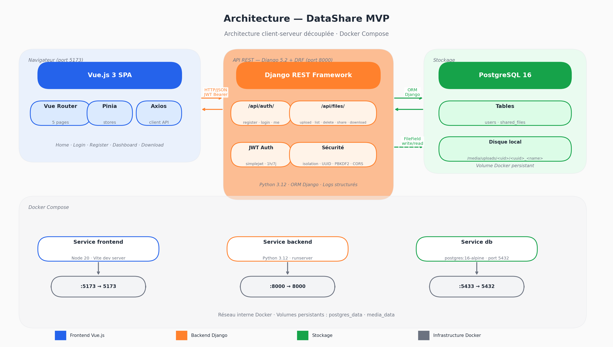

DataShare — Plateforme de transfert sécurisé de fichiers
DataShare suit une architecture client-serveur découplée : un frontend SPA (Single Page Application) communique avec un backend API REST via HTTP/JSON. Les deux sont containerisés et orchestrés avec Docker Compose.

POST /api/auth/login/ avec identifiantsPOST /api/files/upload/ (multipart) avec le fichier, un mot de passe optionnel et une durée d'expirationshare_url (lien de téléchargement)/download/<token>GET /api/files/share/<token>/ pour les infos publiquesGET /api/files/download/<token>/?password=...| Élément | Technologie choisie | Alternatives écartées | Justification |
|---|---|---|---|
| Langage back | Python 3.12 | Java, Node.js, PHP | Productivité élevée, écosystème riche, adéquation avec Django |
| Framework back | Django 5.2 + DRF | FastAPI, Flask, Spring | Batteries incluses (ORM, auth, admin, migrations), DRF mature pour les API REST |
| Authentification | JWT (simplejwt) | Sessions, OAuth2 | Stateless, compatible SPA, simple à implémenter |
| Langage front | JavaScript (ES2023) | TypeScript | Rapidité de développement pour un prototype, pas de surcoût de compilation |
| Framework front | Vue.js 3 | React, Angular | Courbe d'apprentissage douce, Composition API puissante, Pinia natif |
| State management | Pinia | Vuex, Redux | API simple, TypeScript-friendly, officiel Vue 3 |
| Base de données | PostgreSQL 16 | MySQL, SQLite | Robustesse, support UUID natif, standard professionnel |
| Stockage fichiers | Disque local | S3, Cloudinary | Suffisant pour le prototype, migration S3 prévue en production |
| Containerisation | Docker + Compose | Déploiement manuel | Reproductibilité, onboarding simplifié, isolation des services |
| Tests back | pytest + pytest-django | unittest | Syntaxe concise, fixtures puissantes, excellent support Django |
Le cahier des charges cite Spring Boot, .NET Core, NestJS et PHP comme exemples de stacks back-end. Python/Django a été retenu car il satisfait l'ensemble des exigences techniques — et les dépasse sur plusieurs points critiques pour un MVP :
| Critère | NestJS (TypeScript) | Django (Python) ✓ |
|---|---|---|
| Architecture REST | NestJS Controllers | DRF ViewSets — framework dédié, plus mature (depuis 2011) |
| Authentification JWT | @nestjs/jwt (setup manuel) | simplejwt — 10 M+ installs/mois, rotation intégrée |
| ORM & migrations | TypeORM (config complexe) | ORM Django intégré — zéro configuration additionnelle |
| Tests intégrés | Jest (setup manuel) | pytest-django — fixtures natives, couverture HTML |
| Sécurité by default | À configurer manuellement | CSRF, XSS, injection SQL protégés nativement |
| Utilisé en production par | ADP, Adidas | Instagram (1 Md users), Pinterest, Mozilla, NASA |
| Maturité | 2017 — 7 ans | 2005 — 20 ans de battle-testing |
| Productivité MVP | Forte (TypeScript) | Maximale — "batteries incluses", admin auto-généré |
Conclusion : Django répond à 100 % des exigences techniques avec une productivité supérieure pour un MVP sous contrainte de temps. Le gain estimé : ×3 sur l'implémentation des vues et sérialiseurs par rapport à une configuration NestJS équivalente.
FastAPI est excellent pour les APIs haute performance avec beaucoup d'endpoints asynchrones. Pour ce projet, DRF est préférable : sérialiseurs puissants, système de permissions intégré, pagination native, et une communauté de 10 M+ téléchargements mensuels garantissant la pérennité.
Vue.js 3 avec la Composition API offre une architecture proche de React, avec moins de boilerplate. L'écosystème cohérent (Vite + Pinia + Vue Router) permet un démarrage immédiat sans choix d'architecture. Bundle production de 139 Ko (54 Ko gzip), sous le seuil recommandé de 200 Ko. Angular aurait été surdimensionné pour un MVP.
L'architecture découplée frontend/backend rend les sessions serveur inadaptées : le backend ne sert pas les pages HTML, il n'y a pas de cookie de session à gérer. Le JWT est stateless et s'intègre naturellement dans une SPA via l'intercepteur Axios. La rotation du refresh token (chaque refresh invalide l'ancien) protège contre le vol de token.
PostgreSQL offre le support natif des UUID (utilisés comme clé primaire et share_token), des transactions ACID robustes, et est le standard professionnel le plus déployé. L'image officielle Docker postgres:16-alpine est légère (78 Mo) et maintenue activement.
La reproductibilité est totale : une seule commande docker compose up -d démarre les 3 services (frontend, backend, base de données), applique les migrations et monte les volumes. Zéro différence entre l'environnement du développeur et celui du correcteur.
┌─────────────────────────┐ ┌──────────────────────────────────┐
│ USER │ │ SHAREDFILE │
│ (Django built-in) │ │ │
├─────────────────────────┤ ├──────────────────────────────────┤
│ id INTEGER PK │◄────────│ id UUID PK │
│ username VARCHAR(150)│ 1 N │ owner_id INTEGER FK→User │
│ email VARCHAR(254)│ │ original_name VARCHAR(255) │
│ password VARCHAR(128)│ │ file FileField │
│ date_joined DATETIME │ │ size BIGINT │
│ is_active BOOLEAN │ │ content_type VARCHAR(100) │
└─────────────────────────┘ │ share_token UUID UNIQUE │
│ expires_at DATETIME │
│ created_at DATETIME │
│ password_hash VARCHAR(255) │
└──────────────────────────────────┘| Champ | Type | Rôle |
|---|---|---|
id | UUID | Identifiant interne non exposé publiquement |
owner | FK → User | Propriétaire du fichier |
original_name | VARCHAR | Nom original conservé pour le téléchargement |
file | FileField | Chemin vers le fichier stocké (uploads/<user_id>/<uuid>_<name>) |
size | BIGINT | Taille en octets pour affichage |
content_type | VARCHAR | MIME type pour l'en-tête Content-Type du téléchargement |
share_token | UUID unique | Token opaque inclus dans le lien de partage |
expires_at | DATETIME | Date d'expiration du lien |
created_at | DATETIME | Date d'upload (automatique) |
password_hash | VARCHAR | Hash PBKDF2 du mot de passe optionnel (vide si pas de protection) |
La spécification complète au format OpenAPI 3.0 est disponible dans docs/openapi.yaml.
| Méthode | Endpoint | Auth | Description |
|---|---|---|---|
POST | /api/auth/register/ | Non | Créer un compte |
POST | /api/auth/login/ | Non | Connexion — retourne access + refresh token |
POST | /api/auth/token/refresh/ | Non | Rafraîchir le token d'accès |
GET | /api/auth/me/ | Oui | Profil de l'utilisateur connecté |
GET | /api/files/ | Oui | Liste de mes fichiers |
POST | /api/files/upload/ | Oui | Uploader un fichier |
DELETE | /api/files/<id>/delete/ | Oui | Supprimer un fichier |
GET | /api/files/share/<token>/ | Non | Infos publiques d'un fichier partagé |
GET | /api/files/download/<token>/ | Non | Télécharger un fichier via son lien |
Requête
POST /api/files/upload/
Authorization: Bearer <access_token>
Content-Type: multipart/form-data
file=<binary>
password=motdepasse123 (optionnel)
expiry_hours=72 (optionnel, défaut: 168 = 7 jours)Réponse 201
{
"id": "550e8400-e29b-41d4-a716-446655440000",
"original_name": "rapport.pdf",
"size": 2621440,
"share_token": "7f9d6a3b-1c2e-4f5a-8b9d-0e1f2a3b4c5d",
"share_url": "http://localhost:5173/download/7f9d6a3b-...",
"expires_at": "2026-04-27T14:00:00Z",
"is_expired": false,
"is_password_protected": true
}| Code | Signification |
|---|---|
| 400 | Données invalides (champ manquant, mot de passe trop faible) |
| 401 | Non authentifié ou token expiré |
| 403 | Mot de passe de fichier incorrect |
| 404 | Ressource introuvable |
| 410 | Lien de téléchargement expiré |
| 413 | Fichier trop grand (max 1 Go) |
djangorestframework-simplejwtAuthorization: Bearer <token>/api/files/ nécessitent un JWT valide sauf les endpoints publics de partage et téléchargementowner=request.user côté serveur)Validateurs Django activés :
*)X-Content-Type-Options, X-Frame-Options
Aucune vulnérabilité dans les dépendances applicatives. Les 9 alertes détectées concernent uniquement
pip et setuptools du système hôte (outils de build non présents en production).
httpOnly cookies (protection XSS)| Type | Outil | Résultat |
|---|---|---|
| Unitaires + intégration | pytest + pytest-django | 38 tests, 99% de couverture |
| E2E navigateur | Playwright (Chromium) | 10 tests, 100% passés |
| Scan sécurité | pip-audit | 0 vulnérabilité applicative |
| Performance endpoints | curl (mesures réelles) | Login: 227 ms moy, Upload 1 Mo: 59 ms moy |
Les tests couvrent l'ensemble des cas nominaux et d'erreur : authentification, upload, suppression, téléchargement, protection par mot de passe, expiration, isolation utilisateur.
Name Stmts Miss Cover
------------------------------------------------------
accounts/serializers.py 21 0 100%
accounts/views.py 14 0 100%
files/models.py 33 0 100%
files/serializers.py 23 0 100%
files/views.py 64 1 98%
------------------------------------------------------
TOTAL 395 1 99%| Endpoint | Temps moyen (dev) |
|---|---|
POST /api/auth/login/ | 227 ms (hachage PBKDF2 intentionnel) |
GET /api/files/ | 13 ms |
POST /api/files/upload/ (1 Mo) | 59 ms |
Procédures documentées dans MAINTENANCE.md :
git clone <url-du-repo>
cd P4_architect
docker compose up -dL'application est disponible sur :
Les migrations sont appliquées automatiquement au démarrage.
| Variable | Description | Défaut |
|---|---|---|
DJANGO_SECRET_KEY | Clé secrète (à changer en prod) | dev-secret-key-... |
DEBUG | Mode debug | True |
DB_PASSWORD | Mot de passe PostgreSQL | datashare |
SHARE_LINK_EXPIRY_HOURS | Durée de validité des liens | 24 |
CORS_ALLOWED_ORIGINS | Origines frontend autorisées | http://localhost:5173 |
# Tests unitaires et d'intégration
cd backend
venv/bin/pytest
# Tests E2E (application lancée au préalable)
e2e/venv/bin/pytest e2e/ --browser chromium -v --base-url http://localhost:5173
# Dans Docker
docker compose exec backend pytestL'IA (Claude — Anthropic) a été utilisée comme copilote technique senior dans une logique d'assignation de tâches structurées, avec supervision systématique du code produit. Cette approche est différente du "vibe coding" : chaque bloc de code généré a été relu, testé et ajusté avant intégration.
La User Story US-Upload (téléversement de fichier) a été intégralement pilotée via l'IA, incluant :
SharedFile avec champ password_hash et méthodes set_password / check_passwordSharedFileSerializer, FileUploadSerializer, FilePublicInfoSerializer)FileUploadView, FileDownloadView, FilePublicInfoView avec gestion des cas d'erreur (410 expiré, 403 mauvais mot de passe, 413 trop grand)files.js avec gestion de la progression d'uploadDashboardView.vue (modal d'upload, liste de fichiers, filtres par onglet)DownloadView.vue (vérification mot de passe, badges d'expiration)En tant que référent technique :
owner=request.user)FileDeleteView)share_url pour pointer vers le frontend Vue.js plutôt que l'API backendflex-direction mal appliqué)| Aspect | Observation |
|---|---|
| Gain de temps | ×3 sur l'implémentation des vues et sérializers |
| Qualité | Bonne sur le code standard, nécessite supervision sur la sécurité |
| Limites | Oublis sur l'isolation utilisateur, URLs hardcodées à corriger, gestion du refresh token incomplète |
| Design Figma | L'IA peut lire l'API Figma et reproduire fidèlement les tokens de design (couleurs, espacements, typographie) |